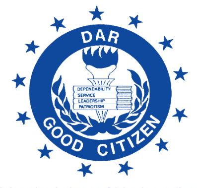

The Dar Good Citizen Award was founded in 1934, with the intention of encouraging and rewarding the qualities of good citizenship. Only one student per school can receive this award. I received the DAR Good Citizen award my senior year of High School.
The National Honor Society is a prestegious organization that strives to elevate the prestiege of a school, by encouraging the values of scholarship, service, leadership, and character. I have been a member of the NHS since the freshman year of High School.
The REACH Scholarship program was launched in 2012 as a needs-based mentorship and college scholarship program. The mission of REACH is to ensure that Georgia's low income, academically promising students have the financial support to graduate from High School and attend college. I was selected to be in the REACH program in the 8th grade.
The Wendy's High School Heisman was created in 1994 by Wendy's and The Heisman Trophy Trust. Since the beginning the program has used the reputation of the Heisman Memorial Trophy to recognize a High School Senior with great ability, diligence, perserverance, and hard work. I received this award my senior year of High School.